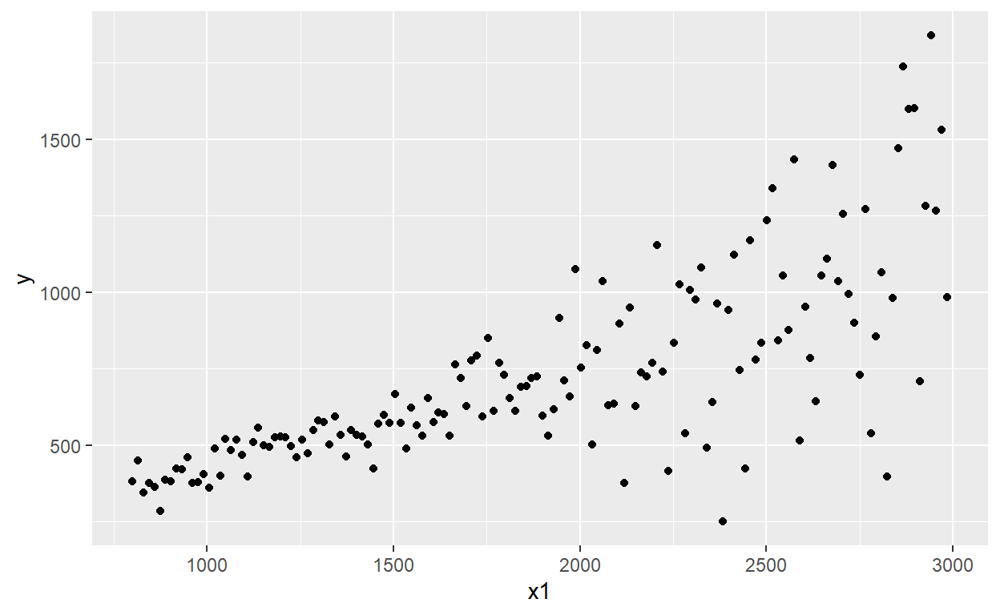

Diagnostics: omitted variable bias, heteroskedasticity, and multicollinearity
Precision (reflected by a smaller standard error) refers to dispersion in the sample estimate, while Accuracy is proximity (nearness) to the true population parameter.
Homoskedasticity–a key assumption in the classic linear regression model (CLRM)–requires the conditional variance of the error to be constant. If we regress against a time-ordered variable, homoskedasticity is a constant variance over time (and a requirement of a stationary process). Heteroskedasticity is the violation of homoskedasticity: it is when the conditional variance is not constant. In the time series context, heteroskedasticity is a time-varying variance; i.e., non-constant over time,
We can test for heteroskedasticity with the White test. Heteroskedasticity is not fatal: the OLS estimators remain linear and remain unbiased however they do not have the minimum variance, so they are not efficient and not BLUE.
Multicollinearity refers to imperfect (aka, near) multicollinearity and is when two or more of the independent variables (regressors) are highly correlated: one of the regressors is highly correlated with (i.e., can itself be explained by) another regressor. Imperfect multicollinearity is generally not a problem because the estimators remain BLUE.
A typical consequence (and telltale indication) of multicollinearity is a high F-statistic but low individual t-statistics. If we observe insignificant regression coefficients (low t-stats) but a significant joint hypothesis (high F-statistic), we can suspect multicollinearity.
Omitted variable bias has two conditions: the omitted (aka, confounding) variable is correlated with the dependent (aka, explained) variable, and is correlated with another independent (aka, regressor) variable. Please notice that simply omitting an independent variable (despite its correlation with the dependent) is insufficient to create omitted variable bias! Why?
Cook’s Distance, D(j), measures the impact of an outlier; a D(j) value greater than 1.0 signifies a large impact by the outlier.
20.19.1. Jane manages a market-neutral equity fund for her investment management firm. The fund’s market-neutral style implies (we will assume) that the fund’s beta with respect to the market’s excess return is zero. However, the fund does seek exposure to other factors. The size factor captures the excess return of small-capitalization stocks (SMB = “small minus big”). Jane tests her portfolio’s exposure to the size factor by regressing the portfolio’s excess return against the size factor returns. Her regression takes the form PORTFOLIO(i) = α + β1×SMB(i) + ε(i). The results of this single-variable (aka, simple) regression are displayed below.
(gt table here)
In this simple regression, we can observe that SMB’s coefficient is 0.6771 and significant. Jane is concerned that this simple regression might suffer from omitted variable bias. Specifically, she thinks the value factor has been omitted. The value factor captures the excess returns of value stocks (HML = “high book-to-market minus low book-to-market”)’. She confirms that the omitted variable, HML, is associated with her response variable. Further, the omitted variable, HML, is correlated to SMB. The correlation between HML and SMB is 0.30. Jane runs a multivariate regression with both explanatory variables, SMB and HML; in this regression, HML’s beta coefficient is 0.7240 such that the new term is β2×HML(i) = 0.7240×HML(i). Which of the following is nearest to the revised SMB coefficient; i.e., what is the revised β1?
library(tidyverse)
library(broom)
library(gt)
intercept <- .03
intercept_sig <- .01
# x1 is market factor
x1_mu <- .05
x1_sig <- .01
x1_beta <- 0.5
# x2 is size factor
x2_mu <- .04
x2_sig <- .01
x2_beta <- 0.7
#x3 is value factor
x3_mu <- .03
x3_sig <- .01
x3_beta <- -0.5
noise_mu <- 0
noise_sig <- 0 # low value gets low p-value b/c low noise
size <- 120
set.seed(52)
results <- tibble(
x0 = rnorm(size, intercept, intercept_sig),
x1 = rnorm(size, x1_mu, x1_sig),
x2 = rnorm(size, x2_mu, x2_sig),
x2_r = 0.3 * x1 + sqrt(1 - 0.3^2)* x2,
x3 = rnorm(size, x3_mu, x3_sig),
x1_b = rep(x1_beta, size),
x2_b = rep(x2_beta, size),
x3_b = rep(x3_beta, size),
noise = rnorm(size, 0, noise_sig)
)
results1 <- results %>% mutate(
y1 = x0 + x1_b * x1 + noise, # market factor only
y2 = x0 + x1_b * x1 + x2_b * x2_r + noise, # market and size
y3 = x0 + x1_b * x1 + x2_b * x2 + x3_b * x3 + noise # all three
)
model_y1 <- lm(y2 ~ x1, data = results1) # market only
model_y2 <- lm(y2 ~ x1 + x2_r, data = results1) # market and size
model_y3 <- lm(y3 ~ x1 + x2 + x3, data = results1)
cor_x1_x2 <- cor(results1$x1, results1$x2_r)
cov_x1_x2 <- cov(results1$x1, results1$x2_r)
var_x1 <- var(results1$x1)
var_x2 <- var(results1$x2_r)
beta_x1 <- cov_x1_x2/var_x1
model_omit <- lm(x2_r ~ x1, data = results1)
# model_y1 suffers omitted variable bias: x1 = 0.6771 as given in problem
summary(model_y1)
Call:
lm(formula = y2 ~ x1, data = results1)
Residuals:
Min 1Q Median 3Q Max
-0.038216 -0.008610 -0.001528 0.008894 0.033695
Coefficients:
Estimate Std. Error t value Pr(>|t|)
(Intercept) 0.058839 0.005298 11.105 < 2e-16 ***
x1 0.677063 0.106361 6.366 3.86e-09 ***
---
Signif. codes: 0 '***' 0.001 '**' 0.01 '*' 0.05 '.' 0.1 ' ' 1
Residual standard error: 0.01155 on 118 degrees of freedom
Multiple R-squared: 0.2556, Adjusted R-squared: 0.2493
F-statistic: 40.52 on 1 and 118 DF, p-value: 3.864e-09# And note that "true" X1 = 0.463 per the solution's 0.460
# Problem provides rounded 0.7240 as HML coefficient
summary(model_y2)
Call:
lm(formula = y2 ~ x1 + x2_r, data = results1)
Residuals:
Min 1Q Median 3Q Max
-0.0221522 -0.0069359 0.0000787 0.0066889 0.0227758
Coefficients:
Estimate Std. Error t value Pr(>|t|)
(Intercept) 0.030915 0.005373 5.754 7.12e-08 ***
x1 0.463067 0.088293 5.245 7.05e-07 ***
x2_r 0.724203 0.086597 8.363 1.48e-13 ***
---
Signif. codes: 0 '***' 0.001 '**' 0.01 '*' 0.05 '.' 0.1 ' ' 1
Residual standard error: 0.009173 on 117 degrees of freedom
Multiple R-squared: 0.5341, Adjusted R-squared: 0.5262
F-statistic: 67.07 on 2 and 117 DF, p-value: < 2.2e-16model_tidy <- tidy(model_y1)
model_tidy[2,1] <- "SMB"
gt_table_model <- gt(model_tidy)
gt_table_model <-
gt_table_model %>%
tab_options(
table.font.size = 14
) %>%
tab_style(
style = cell_text(weight = "bold"),
locations = cells_body()
) %>%
tab_header(
title = "Market-neutral portfolio excess returns regressed against SMB",
subtitle = md("(but HML is an ***omitted variable***)")
#) %>% tab_source_note(
# source_note = md("the source is ... FRED")
) %>% cols_label(
term = "Coefficient",
estimate = "Estimate",
std.error = "Std Error",
statistic = "t-stat",
p.value = "p value"
) %>% fmt_number(
columns = vars(estimate, std.error, statistic, p.value),
decimals = 4
) %>% fmt_scientific(
columns = vars(statistic, p.value),
) %>% tab_options(
heading.title.font.size = 14,
heading.subtitle.font.size = 14
)
gt_table_model
| Market-neutral portfolio excess returns regressed against SMB | ||||
|---|---|---|---|---|
| (but HML is an omitted variable) | ||||
| Coefficient | Estimate | Std Error | t-stat | p value |
| (Intercept) | 0.0588 | 0.0053 | 1.11 × 101 | 4.74 × 10−20 |
| SMB | 0.6771 | 0.1064 | 6.37 | 3.86 × 10−9 |
20.19.2. Josh regressed house prices (as the response or dependent variable) against two explanatory variables: square footage (SQFEET) and the number of rooms in the house (ROOMS). The dependent variable, PRICE, is expressed in thousands of dollars ($000); e.g., the average PRICE is $XXX.000 because the average house price in the sample of 150 houses is $XXX.000. The units of SQFEET are unadjusted units; e.g., the average SQFEET in the sample is X,XXX ft^2. The variable ROOMS is equal to the sum of the number of bedrooms and bathrooms; because much of the sample is 2- and 3-bedroom houses with 2 baths, the average of ROOM is X.XX. Josh’s regression results are displayed below.
Josh is concerned that the data might not be homoscedastic. He decides to conduct a White test for heteroskedasticity. In this test, he regresses the squared residuals against each of the explanatory variables and the cross-product of the explanatory variables (including the product of each variable with itself). The results of this regression are displayed below.
# library(tidyverse)
# library(broom)
# library(gt)
intercept <- 40
intercept_sig <- .01
x1_mu <- 1000
x1_sig <- 400
x1_beta <- 0.3
x2_mu <- 4.5
x2_sig <- 2
x2_beta <- 20.0
noise_mu <- 0
noise_sig <- 500 # low value gets low p-value b/c low noise
size <- 150
set.seed(65)
rho_noise_x1 <- 0.7
ft2_start = 800
ft2_end = 3000
results <- tibble(
x0_sn = rnorm(size),
x1_sn = rnorm(size),
x2_sn = rnorm(size),
e = rnorm(size),
# e_corr = rho_noise_x1 * x1_sn + sqrt(1 - rho_noise_x1^2) * noise_sn,
#
x0 = intercept + x0_sn * intercept_sig,
# x1 = x1_mu + x1_sn * x1_sig,
x1 = seq(ft2_start, ft2_end - 1, by = (ft2_end - ft2_start)/size),
x2 = x2_mu + x2_sn * x2_sig,
#
# here the heteroskadisticity is deliberately introduced:
# the error term's sigma is increasing with SQFEET, x1
e_sigma = ((x1 - ft2_start)/100)^2,
# noise = noise_sn_corr * noise_sig,
#
x1_b = rep(x1_beta, size),
x2_b = rep(x2_beta, size)
)
results1 <- results %>% mutate(
y = x0 + (x1_b * x1) + (x2_b * x2) + (e * e_sigma)
)
# cor(results1$e * results1$e_sigma, results1$x1)
model_house <- lm(y ~ x1 + x2, data = results1)
summary(model_house)
Call:
lm(formula = y ~ x1 + x2, data = results1)
Residuals:
Min 1Q Median 3Q Max
-710.33 -79.41 8.68 61.16 731.16
Coefficients:
Estimate Std. Error t value Pr(>|t|)
(Intercept) -9.45712 69.59813 -0.136 0.892
x1 0.36961 0.02734 13.522 <2e-16 ***
x2 8.78355 8.61236 1.020 0.309
---
Signif. codes: 0 '***' 0.001 '**' 0.01 '*' 0.05 '.' 0.1 ' ' 1
Residual standard error: 211.1 on 147 degrees of freedom
Multiple R-squared: 0.5548, Adjusted R-squared: 0.5488
F-statistic: 91.61 on 2 and 147 DF, p-value: < 2.2e-16model_tidy_house <- tidy(model_house)
model_tidy_house[2,1] <- "SQFEET"
model_tidy_house[3,1] <- "ROOMS"
gt_table_model_house <- gt(model_tidy_house)
gt_table_model_house <-
gt_table_model_house %>%
tab_options(
table.font.size = 12
) %>%
tab_style(
style = cell_text(weight = "bold"),
locations = cells_body()
) %>%
tab_header(
title = "House Price regressed against ft^2 (SQFEET) + ROOMS(#)",
subtitle = md("House Price in Thousands **($000)** of dollars")
) %>% tab_source_note(
source_note = md("Residual standard error: 211.1 on 147 degrees of freedom")
) %>% tab_source_note(
source_note = md("Multiple R-squared: 0.5548, Adjusted R-squared: 0.5488")
) %>% tab_source_note(
source_note = md("F-statistic: 91.61 on 2 and 147 DF, p-value: < 2.2e-16")
) %>% cols_label(
term = "Coefficient",
estimate = "Estimate",
std.error = "Std Error",
statistic = "t-stat",
p.value = "p value"
) %>% fmt_number(
columns = vars(estimate, std.error, statistic, p.value),
decimals = 3
) %>% fmt_scientific(
columns = vars(p.value),
) %>% tab_options(
heading.title.font.size = 14,
heading.subtitle.font.size = 12,
source_notes.font.size = 12
)
gt_table_model_house
| House Price regressed against ft^2 (SQFEET) + ROOMS(#) | ||||
|---|---|---|---|---|
| House Price in Thousands ($000) of dollars | ||||
| Coefficient | Estimate | Std Error | t-stat | p value |
| (Intercept) | −9.457 | 69.598 | −0.136 | 8.92 × 10−1 |
| SQFEET | 0.370 | 0.027 | 13.522 | 1.40 × 10−27 |
| ROOMS | 8.784 | 8.612 | 1.020 | 3.09 × 10−1 |
| Residual standard error: 211.1 on 147 degrees of freedom | ||||
| Multiple R-squared: 0.5548, Adjusted R-squared: 0.5488 | ||||
| F-statistic: 91.61 on 2 and 147 DF, p-value: < 2.2e-16 | ||||
mean(results1$y) # price
[1] 728.2827mean(results1$x0) # intercept
[1] 39.99987mean(results1$x1) # sqfeet
[1] 1892.667mean(results1$x2) # rooms
[1] 4.347188ressq <- resid(model_house)^2
results_v2 <- cbind(results1, ressq)
white_test <- lm(ressq ~ x1 * x2 + I(x1^2) + I(x2^2), data = results_v2)
summary(white_test)
Call:
lm(formula = ressq ~ x1 * x2 + I(x1^2) + I(x2^2), data = results_v2)
Residuals:
Min 1Q Median 3Q Max
-163838 -26649 -2683 6834 385087
Coefficients:
Estimate Std. Error t value Pr(>|t|)
(Intercept) 1.594e+05 7.490e+04 2.128 0.035015 *
x1 -1.962e+02 6.936e+01 -2.828 0.005346 **
x2 -1.578e+04 1.490e+04 -1.059 0.291521
I(x1^2) 6.017e-02 1.742e-02 3.454 0.000727 ***
I(x2^2) 1.494e+02 1.265e+03 0.118 0.906193
x1:x2 1.002e+01 4.936e+00 2.030 0.044183 *
---
Signif. codes: 0 '***' 0.001 '**' 0.01 '*' 0.05 '.' 0.1 ' ' 1
Residual standard error: 76920 on 144 degrees of freedom
Multiple R-squared: 0.3381, Adjusted R-squared: 0.3152
F-statistic: 14.71 on 5 and 144 DF, p-value: 1.201e-11white_tidy <- tidy(white_test)
white_tidy[2,1] <- "SQFEET"
white_tidy[3,1] <- "ROOMS"
white_tidy[4,1] <- "SQFEET^2"
white_tidy[5,1] <- "ROOMS^2"
white_tidy[6,1] <- "SQFEET*ROOMS"
gt_table_white <- gt(white_tidy)
gt_table_white <-
gt_table_white %>%
tab_options(
table.font.size = 12,
) %>%
tab_style(
style = cell_text(weight = "bold"),
locations = cells_body()
) %>%
tab_header(
title = "RESIDUAL^2 regressed against SQFEET + ROOMS + SQFEET^2 + ROOMS^2 + ROOMS*SQFEET",
subtitle = md("White's Test for Heteroskedasticity")
) %>% tab_source_note(
source_note = md("Residual standard error: 76920 on 144 degrees of freedom")
) %>% tab_source_note(
source_note = md("Multiple R-squared: 0.3381, Adjusted R-squared: 0.3152, F-statistic: 14.71 on 5 and 144 DF, p-value: 1.201e-11")
) %>% cols_label(
term = "Coefficient",
estimate = "Estimate",
std.error = "Std Error",
statistic = "t-stat",
p.value = "p value"
) %>% fmt_number(
columns = vars(estimate, std.error, statistic, p.value),
decimals = 3
) %>% fmt_scientific(
columns = vars(estimate, std.error),
) %>% tab_options(
heading.title.font.size = 14,
heading.subtitle.font.size = 12,
source_notes.font.size = 12
)
gt_table_white
| RESIDUAL^2 regressed against SQFEET + ROOMS + SQFEET^2 + ROOMS^2 + ROOMS*SQFEET | ||||
|---|---|---|---|---|
| White's Test for Heteroskedasticity | ||||
| Coefficient | Estimate | Std Error | t-stat | p value |
| (Intercept) | 1.59 × 105 | 7.49 × 104 | 2.128 | 0.035 |
| SQFEET | −1.96 × 102 | 6.94 × 101 | −2.828 | 0.005 |
| ROOMS | −1.58 × 104 | 1.49 × 104 | −1.059 | 0.292 |
| SQFEET^2 | 6.02 × 10−2 | 1.74 × 10−2 | 3.454 | 0.001 |
| ROOMS^2 | 1.49 × 102 | 1.27 × 103 | 0.118 | 0.906 |
| SQFEET*ROOMS | 1.00 × 101 | 4.94 | 2.030 | 0.044 |
| Residual standard error: 76920 on 144 degrees of freedom | ||||
| Multiple R-squared: 0.3381, Adjusted R-squared: 0.3152, F-statistic: 14.71 on 5 and 144 DF, p-value: 1.201e-11 | ||||
# and the heteroskadisticity is visually VERY obvious!
results_v2 %>% ggplot(aes(x = x1, y = y)) +
geom_point()

20.19.3. Emily works for an insurance company and she has regressed medical costs (aka, the response or dependent variable) for a sample of patients against three independent variables: AGE, BMI, and CHARITY. The sample’s average age is X.X years. Body mass index (BMI) is mass divided by height squared and the sample’s average BMI is X.Y. CHARITY is the dollar amount of charitable spending in the last year; the sample average is $X.Y donated to charity in the last year. Emily’s regression results are displayed below.
library(tidyverse)
library(broom)
library(gt)
intercept <- 150
intercept_sig <- 40
# age
x1_mu <- 38
x1_sig <- 7
x1_beta <- 50
# bmi
x2_mu <- 22
x2_sig <- 4
x2_beta <- 100
# spend
x3_mu <- 500
x3_sig <- 250
x3_beta <- -0.4
rho_x1_x2 = 0.3
rho_x1_x3 = 0.97
noise_mu <- 0
noise_sig <- 300 # low value gets low p-value b/c low noise
size <- 43
set.seed(12)
results <- tibble(
x0_sn <- rnorm(size),
x1_sn <- rnorm(size),
x2_sn <- rnorm(size),
x3_sn <- rnorm(size),
#
x0 = intercept + intercept_sig * x0_sn,
#
x1 = x1_mu + x1_sig * x1_sn,
x2_sn_corr = rho_x1_x2*x1_sn + sqrt(1 - rho_x1_x2^2)*x2_sn,
x2 = x2_mu + x2_sig * x2_sn_corr,
x3_sn_corr = rho_x1_x3*x1_sn + sqrt(1 - rho_x1_x3^2)*x3_sn,
x3 = x3_mu + x3_sig * x3_sn_corr,
#
x1_b = rep(x1_beta, size),
x2_b = rep(x2_beta, size),
x3_b = rep(x3_beta, size),
noise = rnorm(size, 0, noise_sig)
)
results1 <- results %>% mutate(
y = x0 + (x1_b * x1) + (x2_b * x2) + (x3_b * x3) + noise
)
cor(results1$x1, results1$x3)
[1] 0.962464model <- lm(y ~ x1 + x2 + x3, data = results1)
model_x1 <- lm(x1 ~ x2 + x3, data = results1)
summary(model_x1)
Call:
lm(formula = x1 ~ x2 + x3, data = results1)
Residuals:
Min 1Q Median 3Q Max
-3.2878 -0.9601 -0.2345 1.1477 3.4376
Coefficients:
Estimate Std. Error t value Pr(>|t|)
(Intercept) 24.022184 1.622772 14.803 <2e-16 ***
x2 0.029178 0.072426 0.403 0.689
x3 0.026997 0.001234 21.883 <2e-16 ***
---
Signif. codes: 0 '***' 0.001 '**' 0.01 '*' 0.05 '.' 0.1 ' ' 1
Residual standard error: 1.733 on 40 degrees of freedom
Multiple R-squared: 0.9266, Adjusted R-squared: 0.923
F-statistic: 252.6 on 2 and 40 DF, p-value: < 2.2e-16rsq_x1 <- summary(model_x1)$r.squared
model_x2 <- lm(x2 ~ x1 + x3, data = results1)
summary(model_x2)
Call:
lm(formula = x2 ~ x1 + x3, data = results1)
Residuals:
Min 1Q Median 3Q Max
-6.9298 -2.1503 -0.5579 2.5672 7.9527
Coefficients:
Estimate Std. Error t value Pr(>|t|)
(Intercept) 16.9897894 8.5885276 1.978 0.0548 .
x1 0.1384986 0.3437854 0.403 0.6892
x3 -0.0001614 0.0096805 -0.017 0.9868
---
Signif. codes: 0 '***' 0.001 '**' 0.01 '*' 0.05 '.' 0.1 ' ' 1
Residual standard error: 3.776 on 40 degrees of freedom
Multiple R-squared: 0.04833, Adjusted R-squared: 0.0007499
F-statistic: 1.016 on 2 and 40 DF, p-value: 0.3713rsq_x2 <- summary(model_x2)$r.squared
model_x3 <- lm(x3 ~ x1 + x2, data = results1)
summary(model_x3)
Call:
lm(formula = x3 ~ x1 + x2, data = results1)
Residuals:
Min 1Q Median 3Q Max
-119.098 -39.213 9.803 48.540 99.936
Coefficients:
Estimate Std. Error t value Pr(>|t|)
(Intercept) -802.99922 74.04616 -10.845 1.77e-13 ***
x1 34.18590 1.56221 21.883 < 2e-16 ***
x2 -0.04306 2.58249 -0.017 0.987
---
Signif. codes: 0 '***' 0.001 '**' 0.01 '*' 0.05 '.' 0.1 ' ' 1
Residual standard error: 61.67 on 40 degrees of freedom
Multiple R-squared: 0.9263, Adjusted R-squared: 0.9227
F-statistic: 251.5 on 2 and 40 DF, p-value: < 2.2e-16rsq_x3 <- summary(model_x3)$r.squared
var_if_x1 <- 1/(1 - rsq_x1 )
var_if_x2 <- 1/(1 - rsq_x2)
var_if_x3 <- 1/(1 - rsq_x3)
multi_table <- tibble(
regression = c(1,2,3),
response = c("AGE", "BMI", "CHARITY"),
explanatory = c("BMI + CHARITY", "AGE + CHARITY", "AGE + BMI"),
Rsquared = c(rsq_x1, rsq_x2, rsq_x3)
)
model_tidy <- tidy(model)
model_tidy[2,1] <- "AGE"
model_tidy[3,1] <- "BMI"
model_tidy[4,1] <- "CHARITY"
gt_table_model <- gt(model_tidy)
gt_table_model <-
gt_table_model %>%
tab_options(
table.font.size = 12
) %>%
tab_style(
style = cell_text(weight = "bold"),
locations = cells_body()
) %>%
tab_header(
title = "Medical COST regressed against AGE + BMI + CHARITY($)",
subtitle = md("Simulated data")
) %>% tab_source_note(
source_note = md("Residual standard error: 325.1 on 39 degrees of freedom")
) %>% tab_source_note(
source_note = md("Multiple R-squared: 0.6961, Adjusted R-squared: 0.6727, F-statistic: 29.77 on 3 and 39 DF, p-value: 3.514e-10")
) %>% cols_label(
term = "Coefficient",
estimate = "Estimate",
std.error = "Std Error",
statistic = "t-stat",
p.value = "p value"
) %>% fmt_number(
columns = vars(estimate, std.error, statistic, p.value),
decimals = 2
) %>% fmt_scientific(
columns = vars(p.value),
) %>% tab_options(
heading.title.font.size = 14,
heading.subtitle.font.size = 12,
source_notes.font.size = 12
)
##
gt_multi_table <- gt(multi_table)
gt_multi_table <-
gt_multi_table %>%
tab_options(
table.font.size = 12
) %>%
tab_style(
style = cell_text(weight = "bold"),
locations = cells_body()
) %>%
tab_header(
title = "Each response variable regressed against the others",
subtitle = md("Testing for multicollinearity")
) %>% tab_source_note(
source_note = md("Note: According to GARP, the standard test of")
) %>% tab_source_note(
source_note = md("multicollinearity is the variance inflation factor (VIF)")
) %>% cols_label(
regression = "Regression",
response = "Response",
explanatory = "Explanatory",
Rsquared = "R-squared",
) %>% cols_align(
align = "center",
columns = vars(regression)
) %>% fmt_number(
columns = vars(Rsquared),
decimals = 3
# ) %>% fmt_scientific(
# columns = vars(p.value),
) %>% tab_options(
heading.title.font.size = 14,
heading.subtitle.font.size = 12,
source_notes.font.size = 12
)
summary(model)
Call:
lm(formula = y ~ x1 + x2 + x3, data = results1)
Residuals:
Min 1Q Median 3Q Max
-923.93 -243.27 21.75 192.64 554.97
Coefficients:
Estimate Std. Error t value Pr(>|t|)
(Intercept) -165.2505 774.7267 -0.213 0.8322
x1 63.6695 29.6571 2.147 0.0381 *
x2 102.4645 13.6123 7.527 4.09e-09 ***
x3 -0.9461 0.8334 -1.135 0.2632
---
Signif. codes: 0 '***' 0.001 '**' 0.01 '*' 0.05 '.' 0.1 ' ' 1
Residual standard error: 325.1 on 39 degrees of freedom
Multiple R-squared: 0.6961, Adjusted R-squared: 0.6727
F-statistic: 29.77 on 3 and 39 DF, p-value: 3.514e-10summary(multi_table)
regression response explanatory
Min. :1.0 Length:3 Length:3
1st Qu.:1.5 Class :character Class :character
Median :2.0 Mode :character Mode :character
Mean :2.0
3rd Qu.:2.5
Max. :3.0
Rsquared
Min. :0.04833
1st Qu.:0.48734
Median :0.92634
Mean :0.63377
3rd Qu.:0.92649
Max. :0.92663 gt_table_model
| Medical COST regressed against AGE + BMI + CHARITY($) | ||||
|---|---|---|---|---|
| Simulated data | ||||
| Coefficient | Estimate | Std Error | t-stat | p value |
| (Intercept) | −165.25 | 774.73 | −0.21 | 8.32 × 10−1 |
| AGE | 63.67 | 29.66 | 2.15 | 3.81 × 10−2 |
| BMI | 102.46 | 13.61 | 7.53 | 4.09 × 10−9 |
| CHARITY | −0.95 | 0.83 | −1.14 | 2.63 × 10−1 |
| Residual standard error: 325.1 on 39 degrees of freedom | ||||
| Multiple R-squared: 0.6961, Adjusted R-squared: 0.6727, F-statistic: 29.77 on 3 and 39 DF, p-value: 3.514e-10 | ||||
gt_multi_table
| Each response variable regressed against the others | |||
|---|---|---|---|
| Testing for multicollinearity | |||
| Regression | Response | Explanatory | R-squared |
| 1 | AGE | BMI + CHARITY | 0.927 |
| 2 | BMI | AGE + CHARITY | 0.048 |
| 3 | CHARITY | AGE + BMI | 0.926 |
| Note: According to GARP, the standard test of | |||
| multicollinearity is the variance inflation factor (VIF) | |||
mean(results1$y) # cost
[1] 4079.452mean(results1$x0) # intercept
[1] 145.2152mean(results1$x1) # age
[1] 38.48411mean(results1$x2) # bmi
[1] 22.2372mean(results1$x3) # spend
[1] 511.6571# let's see the VIFs
var_if_x1
[1] 13.63041var_if_x2
[1] 1.050788var_if_x3
[1] 13.57542